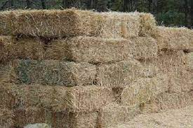

en esta pajina ti vas a ver todos los tipos de forajes qe se van a estar usando en la engorda de ganado .
 el ganado de engorda debe de estar en las
mejores condisiones ambientales ,y de alimentacion.coco tamvien
deve de tener comida 24/7